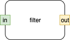 Fig. 1 Filter
Fig. 2 Filter With Exceptions
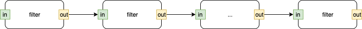 Fig. 3 Pipeline
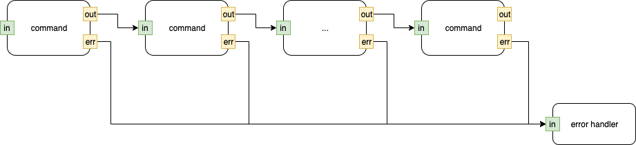 Fig. 4 UNIX® Pipeline
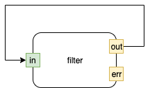 Fig. 5 Feedback
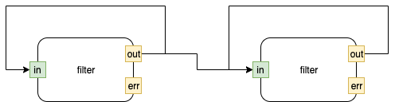 Fig. 6 Feedback With Feedforward
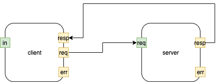 Fig. 7 Client Server
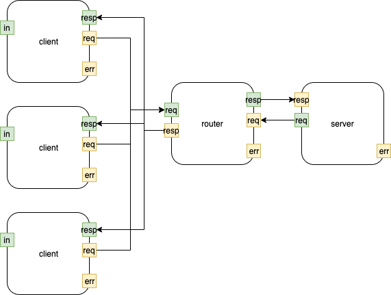 Fig. 8 Client Server With Router
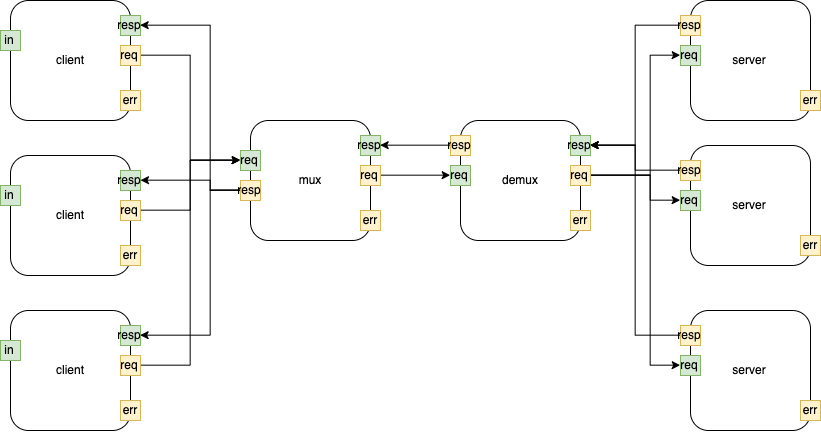 Fig. 9 Concentrator
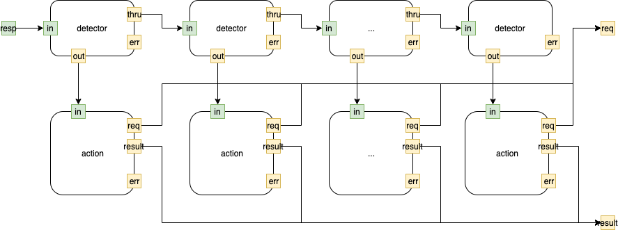 Fig. 10 Daisy Chain (prioritized at the Architectural level)
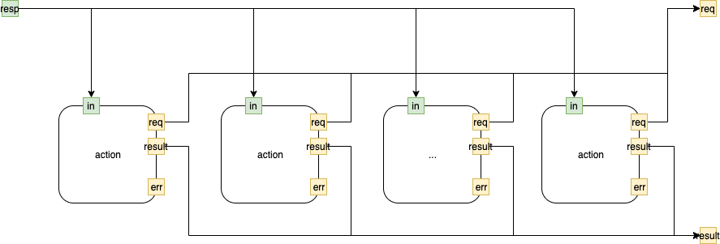 Fig. 11 Bus
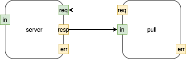 Fig. 12 Pull
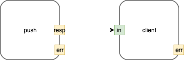 Fig. 13 Push